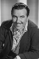

Country:United States, 99 minutes
Spoken languages:
Genres:Crime, Drama, Thriller
Director(s):Phil Karlson
Writer(s):Harry Essex, George Bruce
Video Codec:Unknown
Number: 1759


Certification:NR
Storyline:
A down-on-his-luck ex-GI finds himself framed for an armored car robbery. When he's finally released for lack of evidence--after having been beaten up and tortured by the police--he sets out to discover who set him up, and why. The trail leads him into Mexico and a web of hired killers and corrupt cops.
Cast: 

Medium: Original DVD,
Comments: Part of: Mystery Classics - 50 Movie Pack
Loaned: No
Aspect ratio: Unknown